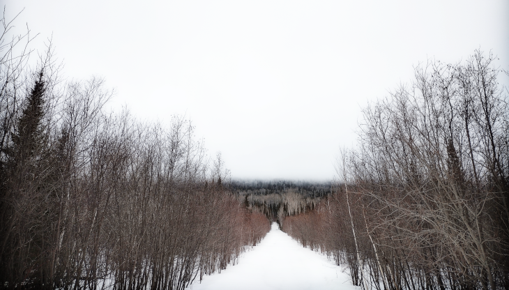

Correspondence
Lawrence Bottorff
P.O. Box 1302
Grand Marais, MN, 55604
USA
11th of April, 2022, Grand Marais, Minnesota
This has been a typical North Coast (NC) early Spring week of weather confusion, sun one day, clouds the next, rain, sleet, atmospheric instability. Suffice it to say, here April is not your friend. A very low-ceiling misty-cloudy for the days—to suddenly open into the huge heavens blue electric.

Last week we saw melting and precipitation flood the Coop’s and city’s parking lot partially. Looking up to the ridge, half was cloud-shrouded, with the very highest parts frosted. This is now just a memory as the sun has blazed all day strongly.
The harbor is medium visibility, clouds hanging low. Sleet come-and-go. Winds are moderate. Not like yesterday’s, the 5th, when a very strong north-east wind ripped across the sea.
 Clouded Sawtooth Ridge, April 6, 2022so it escapes the scientific scalpels and tweezers of scholarly research. Basically, one reads…and one absorbs—perhaps many times this cycle. And then the exercise part of the process is over. No further left-brain analysis or dissection necessary. No “what does it really mean?” No “what was the context in which…” No “what were his sources of inspiration.” Let’s take a look at a poem from whom I consider one of the leading poets of the age, she being Emily Jane Brontë, specifically, her Fall leaves fall
Fall, leaves, fall; die, flowers, away;
Lengthen night and shorten day;
Every leaf speaks bliss to me
Fluttering from the autumn tree.
I shall smile when wreaths of snow
Blossom where the rose should grow;
I shall sing when night’s decay
Ushers in a drearier day.
This is your first test. You either get it or you don’t. No digging or working out its meaning necessary.
Brontë versus Hemingway
Three shelves
Sublimity
The sublime is a particularly badly mauled concept by the academes.